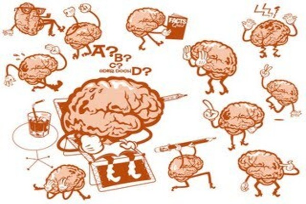
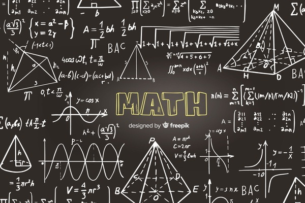
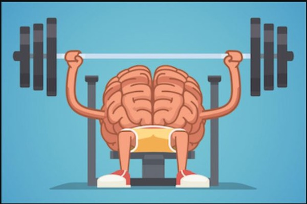

Учиться - значит творить
Принято считать, что математики — это люди, наделенные недюжинными интеллектуальными способностями, которые необходимо развивать с самого детства. И большинству точность и логичность математического мышления недоступна. Мы, студенты курса 22 Online GO IT, на собственном опыте убедились - эта книга достойна прочтения! Если вы оставляете изучение материала на потом, то оставлете себе время на поверхностное изучение материала в сфокусированном режиме, взвинчиваете уровень стресса. По итогу - базовые, шаткие знания.
-

Как победить трудности в изучении материала?
Избегайте эффекта установки - имеющаяся (начальная) мысль препятствует появлению лучшей (более правильной) мысли. Перед изучением материала важно: прочитать учебник, прослушать лекцию/просмотреть онлайн урок, поговорить с кем-нибудь знающим.
-

Понятийные порции - как и с чем их едят?
Понятийная порция – ментальные связки, объединяющие отдельные фрагменты информации через общий смысл. На пути усвоения знаний на глубинном уровне может встать всем известная прокрастинация. Этот «зомби» будет побежден качественной проработкой элементов разрушительной привычки – игнорирование сигнала отвлечься, четкий тайм-менеджмент порядка действий, вознаграждение, изменение и/или усиление веры в успех.
-

Заставь внутреннего зомби работать на себя
Вспомните какую-нибудь проблему, решение которой давно откладываете. Какие мысли вам помогут ею заняться? Например, вы можете подумать: «Не так-то уж это и трудно: как только я начну — станет легче. Полезно иногда заниматься делами, которые не очень нравятся, зато награда того стоит»
-
Совершенствование памяти
Один из способов запоминания: ходить туда-сюда, заранее перекусить и важно задействовать разные участки мозга. Чем больше участков мозга работают, тем надежнее формируются шаблоны памяти, образуя сеть.
-
Не бойся критики
Люди склонны не только сотрудничать, но и конкурировать. Всегда найдутся те, кто будет вас критиковать или принижать ваши успехи. Научитесь относиться к таким ситуациям бесстрастно.
-

Не забывай про отдых
После каждого сеанса тяжелой сосредоточенной работы дайте себе насладиться последующим периодом ментальной расслабленности. Периоды расслабления позволяют взглянуть на материал с другой точки зрения – совместить его с более широким контекстом и общей картиной того, что вы делаете.
Так проходила работа нашей команды
Командная работа — это не простое взаимоотношение между людьми, работающими в одной организации или над одним проектом. Такое взаимодействие — скорее сотрудничество между отдельными работниками, которое распространяется на различные сферы и задачи. Командная работа — это труд группы людей, сосредоточенный над решением конкретной задачи. Команда — это и есть отдельная «единица» в механизме работы организации.
 Посмотреть mind map
Посмотреть mind map
Помни!
- Учиться - значит творить
- Непонимание - полезная часть процессы обучения
- Учеба - это преодоление непонимания
- Задать правильно вопрос - зачит на 80% добиться успеха
- Некоторые из особо выдающихся ученых начинали как безнадежные сорвиголовы
Советы для усвоения нового материала
- Физические упражнения способствуют значительному улучшению памяти и повышения способности к обучению
- Интервальные повторения, лучше регулярно понемногу, чем за один раз сразу все
- Кратко повторяйте информацию, которую стремитесь запомнить, в течении нескольких дней
- Объединяйте явления, понятия, факты и прочее в группы, чтобы упростить материал
Стремись!
Удача благоволит к тем, кто прилагает усилия и стремится к цели.
Кратковременная, но интенсивная концентрация
- Выключите телефон, компьютер, оградите себя от любых отвлекающих шумов
- Поставьте таймер на 25 минут
- Сосредоточьтесь на задаче, на поисках решения
- По истечение 25 минут наградите себя - побродите по интернету, проверьте сообщения и т.д.